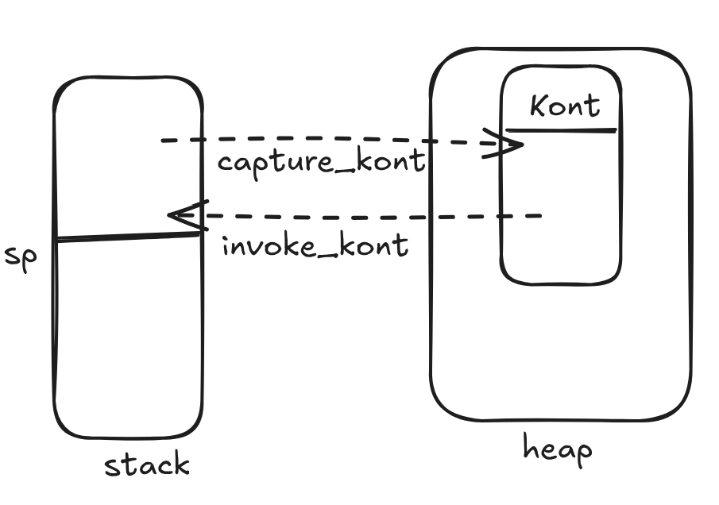

Call/cc in C with Stack Copying
A continuation represents “the rest of the computation.” At any point in a program, the continuation is the answer to the question: “If this expression finishes, what happens next?”
Continuation is just a semantic concept that describes “the rest of computation”, call/cc, on the other hand, allows you to turn the semantic object into a value you can use. In scheme for example, you can call “the rest of computation” as if it’s a function.
In a C program, the control state resides on the stack. To implement call/cc, we capture the current state by copying the active stack into the heap. To invoke the continuation later, we load that saved snapshot back into the live stack. The idea is very simple.
This is a very simple and very rudimentary C implement of call/cc.

We copy the stack until a defined ‘stack_bottom’. By controlling this boundary (for example, setting it to the top of main’s frame), we can implement delimited continuations. Here we simply capture the entire stack from the very beginning just for clarity.
C calling conventions have a lot of assumptions on how the stack is used. For example, some registers are caller-saved and some are callee-saved. The compiler sometimes pass arguments directly through register without pushing then to the stack at all. All of these will cause the call/cc to work with an incomplete stack.
call/cc breaks normal stack discipline, which makes the stack copying more difficult to implement in C when the whole C stack is built on the assumptions above. We need some extra book-keepings to make sure the call/cc works robustly. For example, We can force all callee-saved registers onto the stack before we copy the snapshot.
As you can see, this code is tricky:
- Assumes a downward-growing stack architecture.
- Brittle interaction with C stack, threads, signal handlers
- High overhead due to frequent heap-to-stack memory copies.
- Cumbersome compared to high-level languages.
- Jumping back into a function is a UB!
In practice, C mostly rely on setjmp/longjmp, state machines, or simply goto and manually do all the bookeepings. Languages with native support typically use CPS (Continuation Passing Style) or heap-allocated frames to avoid these low-level memory issues.
typedef struct Kont {
char *stack_copy; // heap buffer with stack snapshot
size_t size; // bytes copied
char *sp; // stack pointer at capture time
int jumped; // if we just arrived from an invoke
} Kont;
static char *stack_bottom; // highest address of stackCapture the current continuation. This will capture the entire stack all the way back to the stack bottom. It can be very expensive when the call stack is deep.
void capture_kont(Kont *k) {
char marker;
char *sp = ▮
size_t size = stack_bottom - sp;
// force all arguments and callee-saved registers onto the stack.
asm volatile("" : : :
"rax", "rbx", "rcx", "rdx", "rsi", "rdi", "rbp",
"r8", "r9", "r10", "r11", "r12", "r13", "r14", "r15",
"memory");
if (k->stack_copy) free(k->stack_copy); // clean up old copy if overwriting.
k->stack_copy = malloc(size); if (!k->stack_copy) return;
memcpy(k->stack_copy, sp, size);
k->size = size;
k->sp = sp;
}Invoke the continuation. Load the snapshot back and push the return value. This reqires the Kont to be a captured continuation.
void invoke_kont(Kont *k) {
char marker;
char *sp = ▮
if (sp > k->sp) { // move pointer down if needed
invoke_kont(k);
return;
}
memcpy(k->sp, k->stack_copy, k->size);
asm volatile( // adjust the rsp, and jump back into restored stack.
"mov %0, %%rsp\n"
"ret\n"
:
: "r"(k->sp)
: "memory");
}When we invoke later, the stack will be restored, we want to make sure it is a valid C stack. That’s why we capture inside a function: to maintain a valid stack structure.
- We need the return address
- We need to respect modern stack protection. (128 byte sredzone beneath sp that compiler uses for locals)
- The call/ret convention is managed by the compiler, otherwise we have to hand write it ourself
Capturing inside a function avoids all of these problems.
Kont k;
void test() {
printf("A\n");
capture_kont(&k); // when we go back we starts from here.
printf("B\n");
}
int main(void) {
char stack_marker;
stack_bottom = &stack_marker;
test();
if (!k.jumped) {
printf("C (triggering jump)\n");
k.jumped = 1;
invoke_kont(&k);
}
}The output:
A
B
C (triggering jump)
B